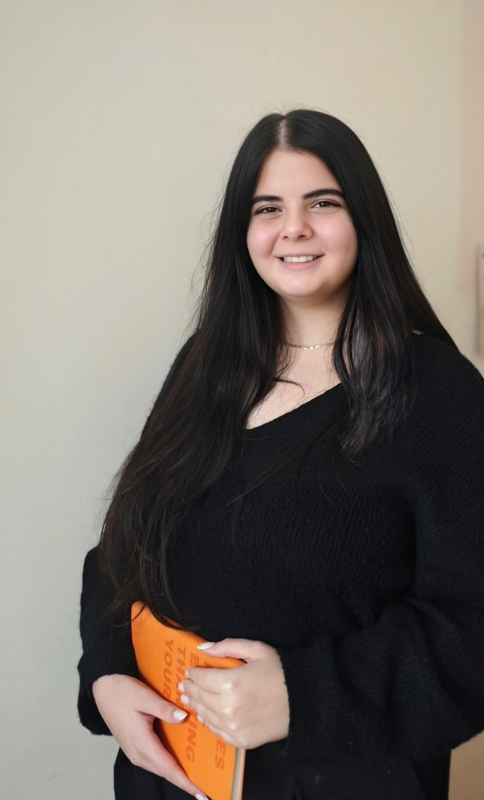
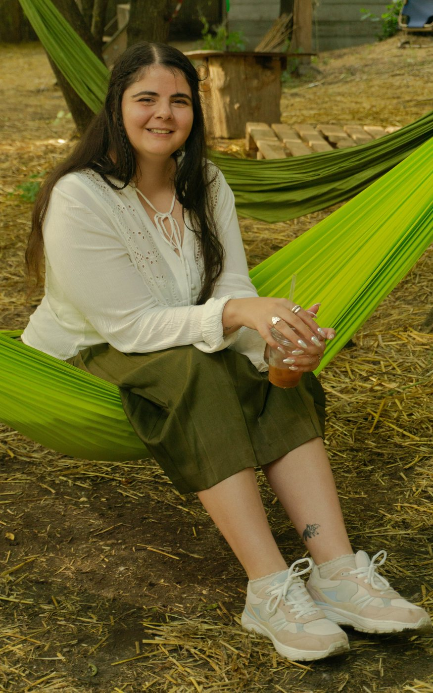

Приватна практика · Онлайн · 18+
Допомагаю розібратись з психічним станом та повернутися до рівноваги
Якщо тривожно, важко або «не як раніше», знайдемо наступний крок разом.
- 1 година
- 18+
- Конфіденційно
- Можна з близькою людиною
Коли варто звернутися
Не обовʼязково знати назву свого стану. Достатньо відчувати, що вам потрібні пояснення і підтримка.
- Тривога та панічні атаки
- Депресивні стани
- Безсоння
- Вигорання та стрес
- ПТСР та розлади адаптації
- Психосоматичні симптоми
- Біполярний афективний розлад
- Розлади особистості
- Медикаментозне лікування
- Діагностую й лікую РДУГ у дорослих
Приймаю дорослих від 18 років.

Привіт, я Марта
Люблю слухати людей і бачити, як вони зростають
Лікарка-психіатр, веду приватну практику онлайн. Працюю українською та англійською. Особливо близькі мені теми: травматичні стресові розлади, розлади особистості й поєднані стани.
Більше про мене
Для мене важливо створити простір, де людина почувається безпечно, щоб говорити про свій досвід без тиску й оцінювання
Марта Хомченко
Перша консультація
- I
Я уважно розпитаю про ваш стан і те, що турбує зараз.
- II
Якщо буде потреба, призначу додаткові обстеження.
- III
Разом підберемо лікування.
Хвилина для себе
Якщо зараз тривожно, почніть із видиху
Вдих на 4, довгий видих на 6. Шість разів, приблизно хвилина. Це не лікування, а пауза.
Коли будете готові
Запис
Зустрінемося онлайн
Приватна консультація для дорослих від 18 років. Зустріч триває одну годину та проходить у Google Meet.
Напишіть мені в Telegram, узгодимо час особисто.
ЗаписатисьСкасувати чи перенести можна щонайменше за 48 годин. Консультація не замінює невідкладну допомогу.
Зустрічаємося у Google Meet.
Записатись на консультацію